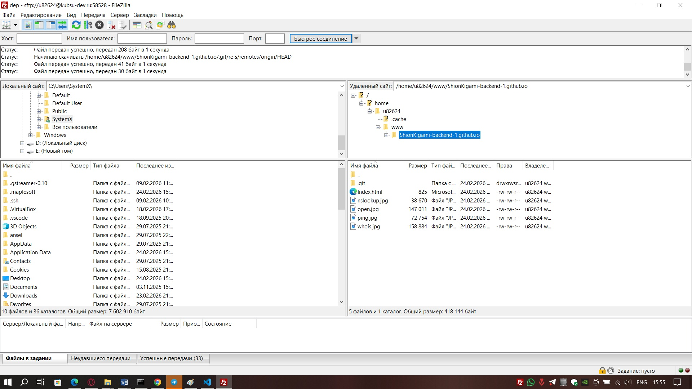

Заданние №1
- SSH (Secure Shell) — это сетевой протокол для удаленного управления компьютерами и серверами через защищенное соединение. Подключение к SSH-серверу — это процесс установки защищенного канала связи между вашим компьютером (клиентом) и удаленным сервером. В большинстве случаев это происходит с помощью специальной команды в терминале или программы с графическим интерфейсом.

- Ping — это служебная сетевая утилита, которая никак не связана с протоколом SSH напрямую, но часто используется до подключения по SSH, чтобы проверить, доступен ли сервер вообще. Она проверяет, может ли ваш компьютер связаться с удаленным сервером по сети, и измеряет скорость этого соединения. Ваш компьютер отправляет на сервер специальный небольшой пакет данных (ICMP Echo Request). Сервер, если он работает и доступен в сети, сразу отвечает таким же пакетом (ICMP Echo Reply). Ping засекает время между отправкой запроса и получением ответа (это называется RTT — Round Trip Time). Проверка связи: Если Ping проходит (вы видите ответы), значит, сеть работает и сервер включен. Проблема может быть в настройках SSH (брандмауэр, отключенный сервис, неверный порт). Проверка потери пакетов: Если часть пакетов теряется, соединение по SSH будет тормозить и постоянно обрываться. Проверка скорости отклика: Высокое время ответа (пинг) означает, что команды в SSH будут выполняться с задержкой.

- Nslookup (Name Server Lookup) — это сетевая утилита для проверки DNS (системы доменных имен). Как и Ping, она не является частью SSH, но критически важна на этапе подготовки к подключению.Она позволяет узнать IP-адрес, скрывающийся за доменным именем (например, google.com), или наоборот — узнать доменное имя по IP-адресу. A-запись и MX-запись — это типы ресурсных записей DNS (системы доменных имен). Они хранятся на DNS-серверах и указывают, как интернет должен обрабатывать запросы к данному домену. A-запись (Address Record): Это самая базовая запись, которая связывает ваш домен с IP-адресом сервера, на котором работает сайт. Указывает, на какой конкретный компьютер в сети (по IPv4) нужно идти, когда пользователь вводит ваш домен в браузере. Без A-записи ваш сайт не откроется. Браузер просто не узнает, куда отправлять запрос. MX-запись (Mail Exchange Record) Это запись, которая указывает, на какой сервер нужно отправлять электронную почту, приходящую на ваш домен (на адреса типа name@ваш-домен.ru). Маршрутизирует почту. Она говорит другим почтовым серверам в интернете: «Если кто-то пишет письмо на этот домен, передавайте его такому-то почтовому серверу». У MX-записей есть числовой приоритет. Чем меньше число, тем выше приоритет сервера. Это нужно для резервирования (например, если основной сервер недоступен, почта пойдет на запасной с более высоким числом приоритета). Чтобы на адресах вашего домена можно было получать и отправлять письма.

- Whois — это сетевая утилита и протокол для получения регистрационной информации о доменном имени или IP-адресе. Как и предыдущие утилиты, Whois не является частью SSH, но часто используется администраторами для сбора данных о сервере или домене, к которому они планируют подключаться. Отвечает на вопросы: Кому принадлежит этот домен?, Когда он зарегистрирован? и На каких серверах он размещается (DNS)? Данные о регистрации домена: Имя владельца (если не скрыто регистратором), даты регистрации и окончания срока оплаты. DNS-серверы (NS-записи): На каких серверах обслуживается домен (это критично для работы и сайта, и почты). Контакты администратора: Email или телефон для связи с владельцем домена (полезно при решении споров или технических проблем). Информация о сети (для IP): Можно узнать, какому провайдеру или хостинг-компании принадлежит конкретный IP-адрес.

- Git Clone. Что делает: Копирует удалённый Git-репозиторий на ваш компьютер. Как работает: Создаёт локальную папку с именем репозитория Скачивает все файлы, историю коммитов и ветки. Автоматически связывает локальный репозиторий с удалённым (origin). Настраивает главную ветку для отслеживанияДля чего нужна: Начать работу с существующим проектом. Сделать локальную копию репозитория. Внести свой вклад в open-source проекты. Развернуть проект на своём компьютере.

- 